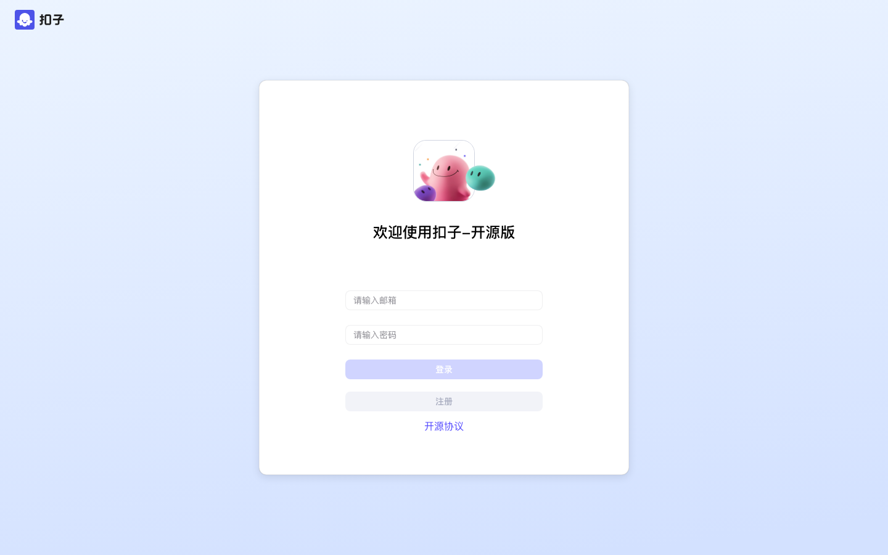
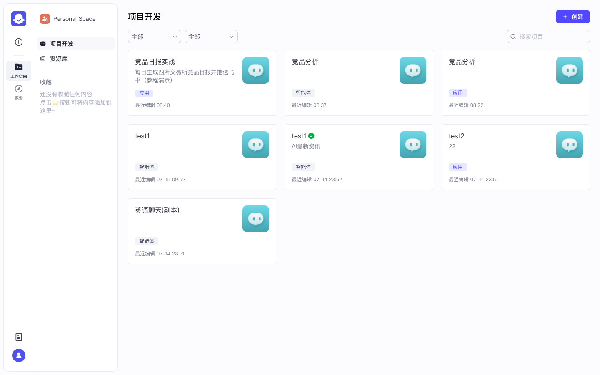
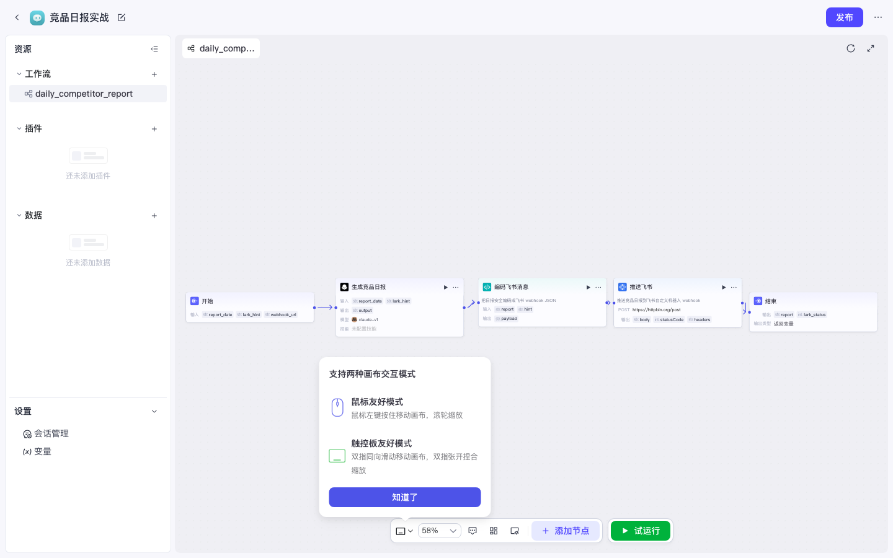
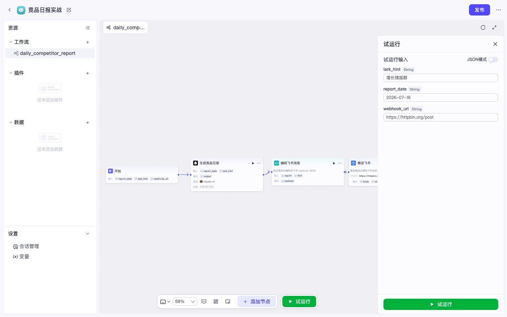

Coze 实战 · P01 / 共 10 课 · 本地开源版 · 2026-07-16
P01 · 竞品日报推送飞书（工作流）
用本地开源 Coze Studio 搭一条可试运行的工作流：LLM 生成四所交易所竞品日报 → Code 安全编码 → HTTP 推飞书 webhook。 上级：Coze 实战总目录 · 源码对照：80 天源码课。
★
总流程
0启动 + 配模型
1登录开发页
2创建应用
3新建工作流
4五节点编排
5试运行
6真 webhook
7发布 + cron
最终节点链
开始 → 生成竞品日报(LLM) → 编码飞书消息(Code) → 推送飞书(HTTP) → 结束
本实录应用：竞品日报实战 · 工作流：daily_competitor_report
0
前置条件
| 项 | 说明 |
|---|---|
| 访问地址 | http://localhost:8888 |
| 启动 | coze-studio 根目录执行 make web |
| 模型 | 管理后台 /admin/#model-management 至少启用 1 个（实录用 claude-v1） |
| 账号 | 自建邮箱账号（本地示例可自注册） |
开源版没有内置定时触发（代码里写了 will support soon）。「每日」靠外部 crontab 调
/v1/workflow/run。1
登录与进入项目开发
作用：进入 Personal Space 的「项目开发」，后续创建应用 / 工作流都在这里。
- 打开
http://localhost:8888/sign登录 - 进入 工作空间 → Personal Space → 项目开发
- 地址类似：/space/<space_id>/develop

图：登录页

图：项目开发页（可见已有「竞品分析」智能体/应用等）
2
创建应用
为什么用「应用」而不是只建智能体：应用 IDE 里可挂工作流，适合「生成日报 + HTTP 推送」的自动化链路；智能体更适合对话式追问。
- 右上角 + 创建
- 选 创建应用（Beta）
- 应用名称：
竞品日报实战 - 介绍：
每日生成四所交易所竞品日报并推送飞书（教程演示） - 确认 → 进入应用 IDE
3
创建工作流
- 左侧 资源 → 工作流 → + → 新建工作流
- 名称必须符合规则：字母/数字/下划线，且以字母开头
常见卡点
❌
✅
每日竞品日报（中文名直接红字报错）✅
daily_competitor_report（描述栏仍可写中文）
确认后进入画布，默认只有「开始 → 结束」。
4
编排五节点
| # | 节点 | 类型 | 要点 |
|---|---|---|---|
| 1 | 开始 | Start | 输出 report_date / lark_hint / webhook_url |
| 2 | 生成竞品日报 | 大模型 | 模型选已启用模型；提示词用 {{report_date}} {{lark_hint}} |
| 3 | 编码飞书消息 | 代码 Python | json.dumps 拼合法 body，截断约 3500 字 |
| 4 | 推送飞书 | HTTP | POST；Body=RAW_TEXT=payload；Header application/json |
| 5 | 结束 | End | 输出 report、lark_status |

图：完整画布（演示 URL 先用 httpbin.org/post 验链路）
4.1 大模型 · 用户提示词
请生成今日竞品日报。报告日期：{{report_date}}。飞书群备注：{{lark_hint}}。
若无实时检索能力，请基于公开行业认知生成并标注推断。4.2 代码节点（Python）
为什么必须有这一步：HTTP JSON 模板渲染不会做 JSON 转义。日报里的换行/引号会把 body 弄坏，飞书返回
400 / 19001 param error。用 Code 做 json.dumps 再以 RAW_TEXT 发出去。import json
async def main(args: Args) -> Output:
params = args.params
report = params.get('report') or ''
hint = params.get('hint') or ''
text = '【竞品日报】' + str(hint) + '\n\n' + str(report)
if len(text) > 3500:
text = text[:3500] + '\n...(内容过长已截断)'
payload = json.dumps({
'msg_type': 'text',
'content': {'text': text}
}, ensure_ascii=False)
ret: Output = {'payload': payload}
return ret输入：report←LLM.output，hint←开始.lark_hint · 输出：payload
4.3 HTTP 节点
| 项 | 值 |
|---|---|
| Method | POST |
| URL（演示） | https://httpbin.org/post |
| URL（真飞书） | https://open.feishu.cn/open-apis/bot/v2/hook/<token>或国际版 open.larksuite.com |
| Body 类型 | RAW_TEXT（不要手写 JSON 模板塞长文本） |
| Body | 引用编码节点的 payload |
| Header | Content-Type: application/json · Auth 关闭 |
5
试运行填参
作用：验证「LLM → Code → HTTP」整条链路；演示阶段用 httpbin 拿
statusCode=200 即可。| 字段 | 示例 | 含义 |
|---|---|---|
report_date | 2026-07-16 | 日报日期（不是 report_data） |
lark_hint | 增长情报群 | 群备注 / 消息前缀用途 |
webhook_url | 可选 | 本实录 URL 写在 HTTP 节点上 |

图：试运行侧栏填参
✅ 实录结果：全节点成功 ·
lark_status: 200 · 约 175s / 3166 Tokens · 结束节点能看到完整 report Markdown6
换成真实飞书 Webhook
- 飞书群 → 设置 → 群机器人 → 添加自定义机器人 → 复制 Webhook
- 打开 推送飞书 节点，URL 换成真实地址
- 若开了「自定义关键词」，确保文案含该词（本方案含「竞品日报」）
- 再试运行，群里应收到消息
Webhook 等同群权限凭证，勿提交到公开仓库；泄露后请在飞书侧重置机器人。
7
发布与每日 cron
- 应用右上角 发布
- 外部 crontab 每天调用 OpenAPI（替换 token / workflow_id）：
0 9 * * * curl -sS -X POST 'http://localhost:8888/v1/workflow/run' \
-H 'Authorization: Bearer <token>' \
-H 'Content-Type: application/json' \
-d "{\"workflow_id\":\"<workflow_id>\",\"parameters\":{\"report_date\":\"$(date +%F)\",\"lark_hint\":\"增长情报群\"}}" \
>> /tmp/coze-comp-daily.log 2>&1工作流 ID 在 URL 末段，例如 .../workflow/7662919178956832768
!
踩坑清单
| 现象 | 原因 | 处理 |
|---|---|---|
| 工作流名红色报错 | 中文名不合规 | 改成 daily_competitor_report |
| 推送飞书 400 / 19001 | JSON 未转义 | 加 Code + RAW_TEXT |
| Tokens=0 / LLM 失败 | 模型未启用 | 去管理后台配 Key |
| httpbin 200 但群无消息 | 仍是演示 URL | 换成真实 webhook |
| 关键词拦截 | 机器人安全设置 | 文案带上关键词 |
和智能体怎么分工
临时追问对比 → 智能体对话；每日例行进群 → 本工作流 + cron；要提升时效 → 再挂搜索插件（需授权）。